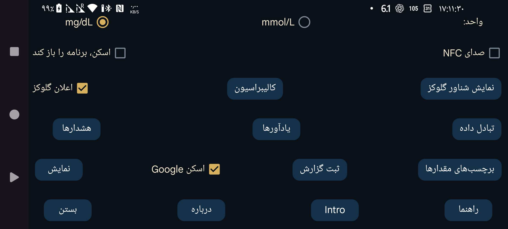

انتخاب کنید مقدار گلوکز با واحد mmol/L نمایش داده شود یا mg/dL.
هنگام اسکن، افزون بر لرزش، صدا هم پخش شود.
اگر فعال باشد، با اسکن حسگر از طریق NFC این برنامه اجرا میشود، حتی وقتی روی صفحه نیست. اگر چند برنامه چنین تنظیمی داشته باشند، Android از شما میپرسد از کدام برنامه استفاده کند. در عمل، نه انتخاب یکبارهٔ برنامه و نه قراردادن آن بهعنوان پیشفرض درست کار نمیکند؛ در نتیجه نمیتوان بدون داشتن یک برنامه در پیشزمینه اسکن کرد. خاموشکردن این گزینه در Juggluco ممکن است اجازه دهد دستکم برنامهٔ دیگری به این روش باز شود.
اگر دسترسی روت دارید، میتوانید فعالشدن LibreLink شرکت Abbott با NFC را نیز غیرفعال کنید (برای Libre 3 کاربرد ندارد):
در محیط adb shell یا Termux دسترسی روت بگیرید و دستور زیر را وارد کنید:
pm disable com.freestylelibre.app.nl/com.librelink.app.ui.common.NFCScanActivity
در LibreLink نسخهٔ 2.7.1 و قدیمیتر باید دستور زیر را به کار میبردید:
pm disable com.freestylelibre.app.nl/com.librelink.app.ui.common.ScanSensorActivity
در این مثال، com.freestylelibre.app.nl نام بستهٔ نسخهٔ هلندی LibreLink است؛ آن را با نام بستهٔ نسخهٔ خود جایگزین کنید. برای یافتن نام بسته حتی بدون روت، دستور زیر را بزنید:
pm list package freestylelibre
پس از این تغییر، وقتی LibreLink در پیشزمینه باشد همچنان میتوانید با آن اسکن کنید، اما در غیر این صورت خودکار باز نمیشود. نسخههای 2.5.2 به بعد LibreLink با تشخیص روت خودشان بسته میشوند. در Magisk میتوانید با تغییر نام Magisk و افزودن برنامهها به DenyList (در Magisk 24.3) یا MagiskHide (در Magisk 23.0) روت را از دید آنها پنهان کنید. Juggluco را نیز به DenyList اضافه کنید. بهجز استفاده از حسگرهای آمریکایی FreeStyle Libre 2، میتوانید نسخهٔ قدیمیتر LibreLink را هم که روت را بررسی نمیکند به کار ببرید.
بدون دسترسی روت نیز میتوانید با adb shell کل برنامه را غیرفعال کنید:
pm disable-user --user 0 com.freestylelibre.app.nl
پیش از تماس با پشتیبانی Abbott، میتوانید آن را با دستور زیر دوباره فعال کنید:
pm enable com.freestylelibre.app.nl
این گزینه پیشتر «گلوکز در نوار وضعیت Android» نام داشت. در حالت فعال، مقدارهای گلوکز دریافتی از بلوتوث بیصدا در یک اعلان و نوار وضعیت Android نمایش داده میشوند. اگر خاموش باشد، بهجای عدد یک نقطه نمایش داده میشود و متن اعلان فقط «برای اتصال به حسگر» یا «برای تبادل داده» خواهد بود. Android برای برنامهای که دائماً در پسزمینه اجرا میشود، وجود چنین اعلان قابل مشاهدهای را الزامی میداند؛ وگرنه ممکن است برنامه را متوقف کند. Juggluco فقط زمانی اعلان را خاموش میکند که «حسگر از طریق بلوتوث» غیرفعال و هیچ اتصال آینهسازی موجود نباشد.
در بعضی تلفنها مقدار گلوکز فقط پس از تغییر تنظیمات اعلان Android در نوار وضعیت دیده میشود. مثلاً در Realme GT 5G به «فهرست برنامهها ← Juggluco ← مدیریت اعلانها» بروید، بخش glucoseNotification را باز کنید و «بیصدا» (Set to Silent) را خاموش کنید. سپس «نمایش در نوار وضعیت» فعال خواهد بود.
میتوانید با انتخاب «اعلان» در منوی میانی سمت چپ نیز اعلان Android دریافت کنید. اگر تنظیم شده باشد، این اعلان به بعضی ساعتهای هوشمند هم میرسد. این قابلیت با ساعتهای Garmin کار میکند؛ دربارهٔ دستگاههای دیگر اطلاعی ندارم. هشدارها هم اعلان تولید میکنند.
با فعالکردن این گزینه، تصویر کوچکی از مقدار فعلی گلوکز همواره روی صفحه دیده میشود، فارغ از اینکه کدام برنامه در پیشزمینه باشد. در نخستین بار فعالسازی، به فهرست برنامهها هدایت میشوید و باید مجوز «نمایش روی برنامههای دیگر» را به Juggluco بدهید.
هشدار افت و افزایش گلوکز، هشدار قطع ارتباط با حسگر و اعلان در دسترس بودن مقدار جدید را تنظیم کنید.
برچسبهای مورد استفاده برای «مقدارها» را تعیین کنید. صفحهای باز میشود که در آن میتوانید برچسبهای ثبت دوز انسولین، کربوهیدرات مصرفشده یا مدت فعالیتهایی مانند فوتبال را انتخاب کنید. اگر از برنامهٔ ساعت Garmin به نام Kerfstok هم استفاده میکنید، این برچسبها برای ساعت ارسال میشوند.
روشهای مختلف ارسال داده از Juggluco به برنامهها یا سرورهای دیگر را تنظیم کنید. برای ارسال به ساعتها به «منوی چپ ← ساعت» بروید.
تعیین کنید اگر در بازهٔ زمانی مشخص مقدار مورد انتظار غذا یا دارو را ثبت نکردید، هشدار فعال شود.
کد ماتریسی بستهٔ حسگرهای Sibionics، اپلیکاتورهای Dexcom G7/ONE+ و کد QR بخش «منوی میانی چپ ← آینهسازی» را با «اسکنر کد Google» بخوانید. اگر این گزینه خاموش باشد، از zXing استفاده میشود. اسکنر Google در بیشتر دستگاهها بهتر کار میکند، ولی گاهی کار نمیکند. اگر خطا برگرداند، برنامه خودکار از zXing استفاده میکند؛ اما گاهی بدون نمایش خطا هم اسکن نمیکند. (Google code scanner) (zXing)
تنظیمات گوناگون مربوط به نحوهٔ نمایش دادهها، از محدودهٔ هدف گرفته تا زبان برنامه.